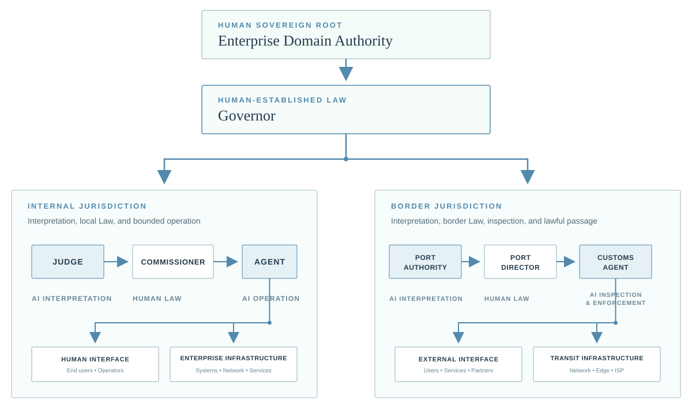

Enterprise Decision Rights
JAZB distinguishes business ownership, Law establishment, architecture, residual-risk acceptance, technical operation, expansion, and independent assurance.

ENTERPRISE GOVERNANCE ARCHITECTURE
JAZB defines how legitimate human Authority becomes bounded machine Authority. Business purpose, human decision rights, Human-Established Law, AI interpretation, execution, evidence, and assurance remain distinct. Internal and Border Jurisdictions are governed independently.

SEPARATION BY DESIGN
JAZB separates who has the right to govern from what machines are technically capable of doing. Human governance establishes legitimate purpose and Law. AI interprets and operates within bounded Authority. Consequential execution, evidence, and assurance remain independently constrained and attributable.
JAZB distinguishes business ownership, Law establishment, architecture, residual-risk acceptance, technical operation, expansion, and independent assurance.
Purpose and permissible autonomy precede Authority. Law, authorization, delegation, operation, reevaluation, revocation, renewal, and retirement remain governed.
Internal Jurisdiction governs enterprise action. Border Jurisdiction governs lawful external passage. Authority in one does not silently authorize the other.
Interpretive decisions do not become unrestricted technical power. Actuation validates the authorizing chain, effective target, and permitted effect before execution.
Governance is continuously demonstrated through operation, observation, validation, discovery, remediation, and revalidation as systems and conditions change.
Law, delegation, decisions, passage, actuation, exceptions, and recovery remain traceable to legitimate provenance and reconstructable evidence.